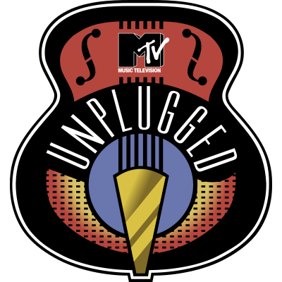

Umělci musí své písně kompletně "přearanžovat". Rockové vypalovačky se mění v jemné balady, místo elektrických kytar slyšíš akustiky, místo kláves piano a často se přidávají smyčcové kvartety. Je to intimní, syrové a divák slyší každý nádech zpěváka.
Pódium vypadá jako obývací pokoj nebo knihovna. Umělec zahraje píseň a pak (často velmi vtipně nebo dojemně) vypráví, co ho vedlo k napsání konkrétního verše, koho tím chtěl naštvat nebo komu tím vyznal lásku. Diváci v publiku pak mohou klást otázky.
MTV vyslala špičkové filmové štáby na ty největší festivaly (jako Rock am Ring nebo Glastonbury) nebo uspořádala vlastní obří koncert na náměstí v nějaké metropoli. Je to čistá energie – tisíce lidí, lasery, ohňostroje a ten nejhlasitější zvuk. Je to pravý opak Unplugged.
Koncerty se konaly na plážích v Cancúnu nebo na Floridě. Zapomeň na sály a smokingy – tady se hrálo v plavkách, všude byl písek, bazény a totální chaos. Umělci často skákali mezi lidi do vody. Bylo to uvolněné a neuvěřitelně "fresh".
Šlo o přímé přenosy v hlavním vysílacím čase. Žádné velké střihy, žádné úpravy v postprodukci. Prostě zapneš televizi v deset večer a vidíš špičkovou kapelu, jak potí krev v klubu pro pár set lidí.